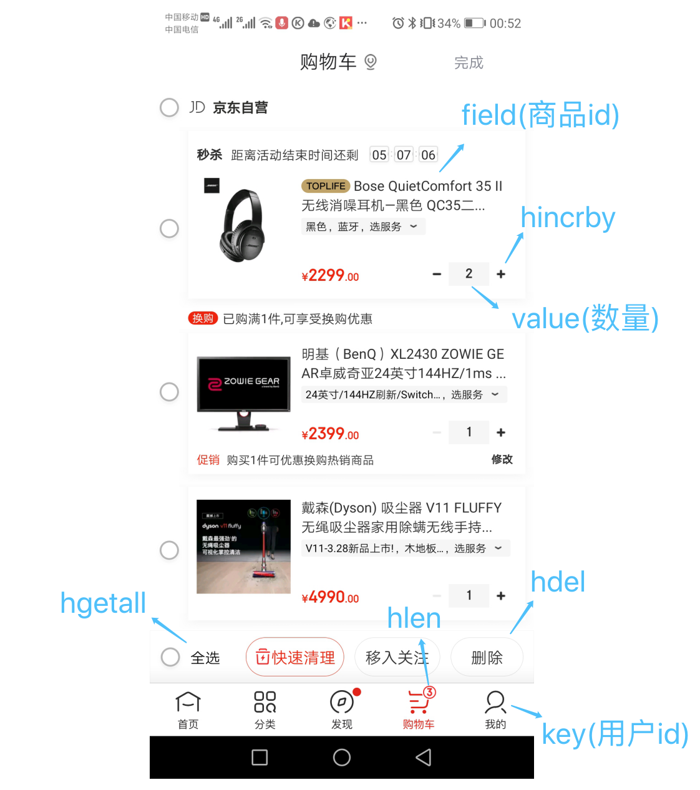
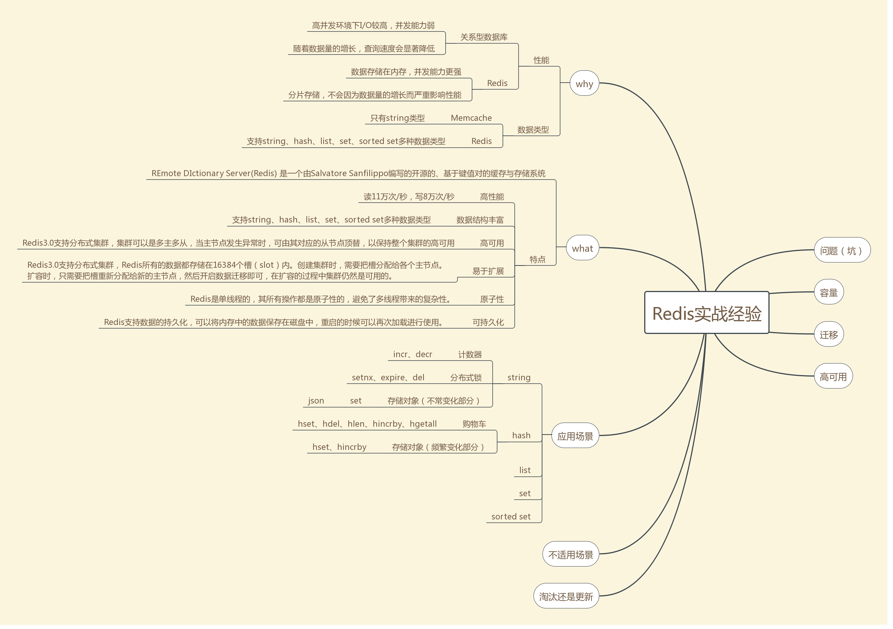

hash类型是一个string类型的field和value的映射表，每个 hash 可以存储 232 - 1 键值对（40多亿）。
应用场景
1. 购物车
以用户id为key，商品id为field，商品数量为value，恰好构成了购物车的3个要素，如下图所示。 
2. 存储对象
hash类型的(key, field, value)的结构与对象的(对象id, 属性, 值)的结构相似，也可以用来存储对象。
在介绍string类型的应用场景时有所介绍，string + json也是存储对象的一种方式，那么存储对象时，到底用string + json还是用hash呢？
两种存储方式的对比如下表所示。
| string + json | hash | |
|---|---|---|
| 效率 | 很高 | 高 |
| 容量 | 低 | 低 |
| 灵活性 | 低 | 高 |
| 序列化 | 简单 | 复杂 |
当对象的某个属性需要频繁修改时，不适合用string+json，因为它不够灵活，每次修改都需要重新将整个对象序列化并赋值，如果使用hash类型，则可以针对某个属性单独修改，没有序列化，也不需要修改整个对象。比如，商品的价格、销量、关注数、评价数等可能经常发生变化的属性，就适合存储在hash类型里。
当然，不常变化的属性存储在hash类型里也没有问题，比如商品名称、商品描述、上市日期等。但是，当对象的某个属性不是基本类型或字符串时，使用hash类型就必须手动进行复杂序列化，比如，商品的标签是一个标签对象的列表，商品可领取的优惠券是一个优惠券对象的列表（如下图所示）等，即使以coupons（优惠券）作为field，value想存储优惠券对象列表也还是要使用json来序列化，这样的话序列化工作就太繁琐了，不如直接用string + json的方式存储商品信息来的简单。
我们简单举个实例来描述下Hash的应用场景，比如我们要存储一个用户信息对象数据，包含以下信息：
用户ID为查找的key，存储的value用户对象包含姓名，年龄，生日等信息，如果用普通的key/value结构来存储，主要有以下2种存储方式：
第一种方式将用户ID作为查找key,把其他信息封装成一个对象以序列化的方式存储，这种方式的缺点是，增加了序列化/反序列化的开销，并且在需要修改其中一项信息时，需要把整个对象取回，并且修改操作需要对并发进行保护，引入CAS等复杂问题。第二种方法是这个用户信息对象有多少成员就存成多少个key-value对儿，用用户ID+对应属性的名称作为唯一标识来取得对应属性的值，虽然省去了序列化开销和并发问题，但是用户ID为重复存储，如果存在大量这样的数据，内存浪费还是非常可观的。
那么Redis提供的Hash很好的解决了这个问题，Redis的Hash实际是内部存储的Value为一个HashMap，也就是说，Key仍然是用户ID,value是一个Map，这个Map的key是成员的属性名，value是属性值，这样对数据的修改和存取都可以直接通过其内部Map的Key(Redis里称内部Map的key为field),也就是通过 key(用户ID) + field(属性标签)就可以操作对应属性数据了，既不需要重复存储数据，也不会带来序列化和并发修改控制的问题。很好的解决了问题。
综上，一般对象用string + json存储，对象中某些频繁变化的属性抽出来用hash存储。
存取
# 存
HMSET key name1 value name2 value
# 取
HGETALL key
加入hash类型的应用场景后的思维导图如下。 
Redis hash 命令
下表列出了 redis hash 基本的相关命令：
| 序号 | 命令及描述 |
|---|---|
| 1 | HDEL key field1 [field2] 删除一个或多个哈希表字段 |
| 2 | HEXISTS key field 查看哈希表 key 中，指定的字段是否存在。 |
| 3 | HGET key field 获取存储在哈希表中指定字段的值。 |
| 4 | HGETALL key 获取在哈希表中指定 key 的所有字段和值 |
| 5 | HINCRBY key field increment 为哈希表 key 中的指定字段的整数值加上增量 increment 。 |
| 6 | HINCRBYFLOAT key field increment 为哈希表 key 中的指定字段的浮点数值加上增量 increment 。 |
| 7 | HKEYS key 获取所有哈希表中的字段 |
| 8 | HLEN key 获取哈希表中字段的数量 |
| 9 | HMGET key field1 [field2] 获取所有给定字段的值 |
| 10 | HMSET key field1 value1 [field2 value2 ] 同时将多个 field-value (域-值)对设置到哈希表 key 中。 |
| 11 | HSET key field value 将哈希表 key 中的字段 field 的值设为 value 。 |
| 12 | HSETNX key field value 只有在字段 field 不存在时，设置哈希表字段的值。 |
| 13 | HVALS key 获取哈希表中所有值 |
| 14 | HSCAN key cursor [MATCH pattern] [COUNT count] 迭代哈希表中的键值对。 |